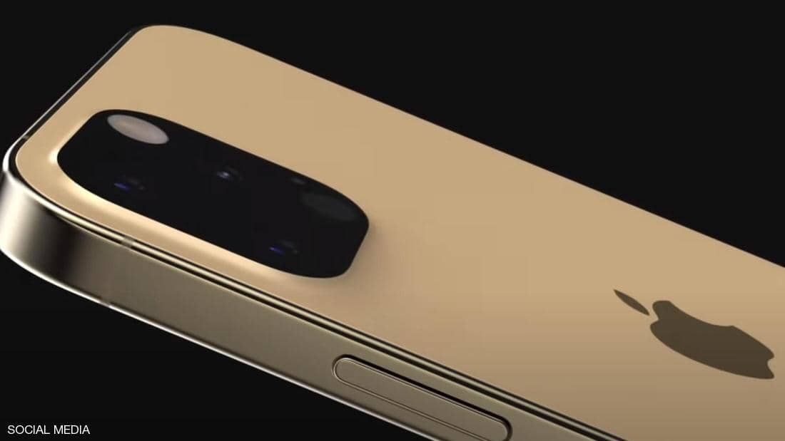

الأثنين
28 من رمضان 1442 هــ 10 مايو 2021
29℃ القاهرة, مصر
بيانات الطالب
| مصر | العالم | تكنولوجيا | رياضة | كاريكاتير |
تسريبات "آيفون 13".. شاشات عرض بتقنيات متطورة وكاميرا كبيرة

أشارت تقارير تقنية هذا الأسبوع إلى أن عددا من الشركات
المتخصصة في توريد أجزاء من هواتف شركة "أبل"، قد بدأت في تصنيع قطع من "آيفون 13".
ومن بين تلك الشركات التي تحدثت عنها التقارير "تي إس إم سي"، والتي تصنّع شرائح
لأجهزة "آيفون" و"آيباد" و"ماك".
وحسبما ذكر موقع "بي جي آر"، فإن تلك التقارير تشير إلى عزم "أبل" إطلاق الإصدار 13
من "آيفون"، في شهر سبتمبر القادم، رغم الأزمة التي تعصف بصناعة التقنية جرّاء تفشي
فيروس كورونا المستجد حول العالم.
كذلك أكد تقرير بأن "سامسونغ" و"إل جي"، بدأتا بإنتاج شاشات "أوليد"، والتي ستكون
مدمجة في جميع طرازات "آيفون 13".
وكشفت تسريبات عن أن هواتف "آيفون 13" ستكون شبيهة بالإصدار "12" من حيث الأبعاد،
وستشغل الكاميرا الخلفية مساحة أكبر، حيث يشاع أنها ستحتوي على مستشعر أكبر.
وستدمج هواتف "آيفون 13" شاشات بتقنية "أوليد"،
والتي ستدعم معدل تحديث ديناميكي يبلغ 120 هيرتز.
كما تشير تسريبات إلى توفير "أبل" لتقنية "برو موشن" في هواتفها القادمة، الأمر
الذي يمنح شاشات العرض معدل تحديث مرتفع.
شائعات أخرى تحدثت بحسب موقع "ذا إيليك" المتخصص بالأخبار التقنية، عن إمكانية
إضافة شاشات "إل تي بي أو أوليد"، التي تجعل معدل التحديث مختلفا اعتمادا على ما
يظهر على الشاشة، وهو ما يحافظ على عمر البطارية.